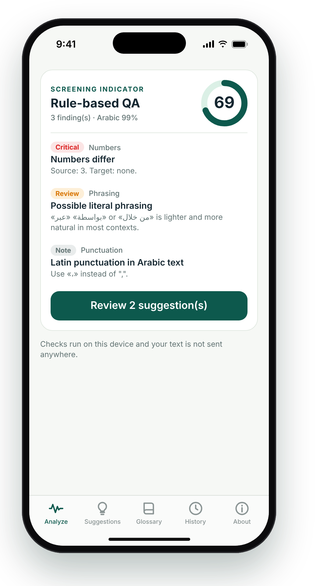
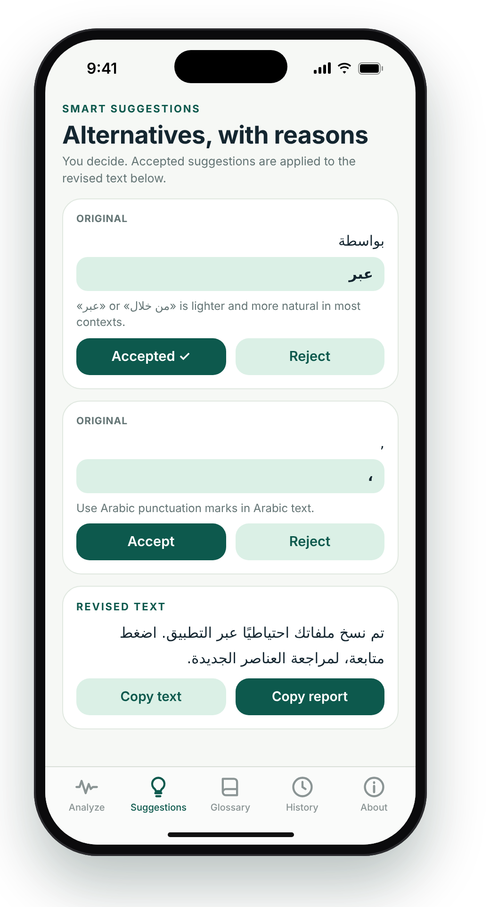
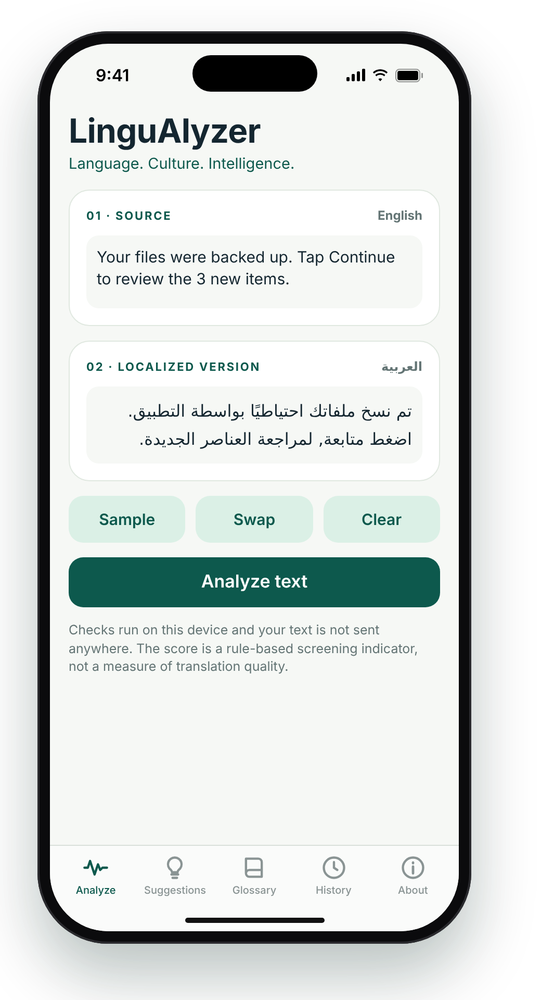
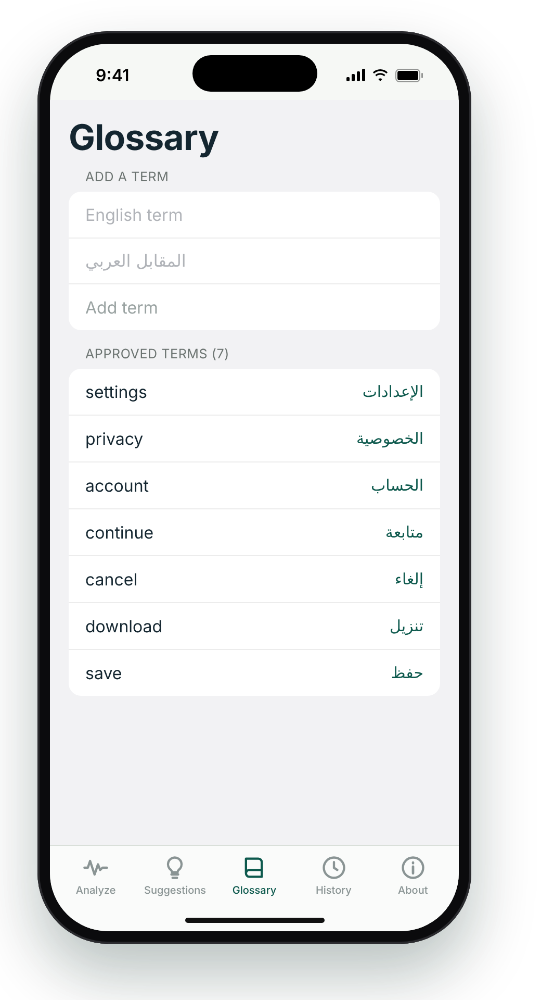
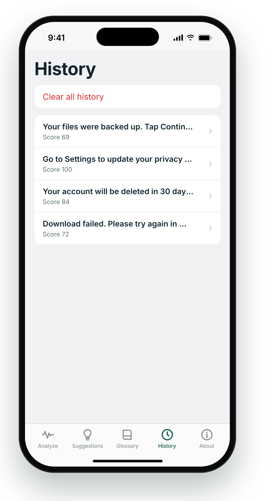
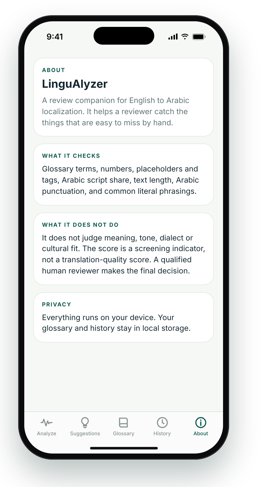
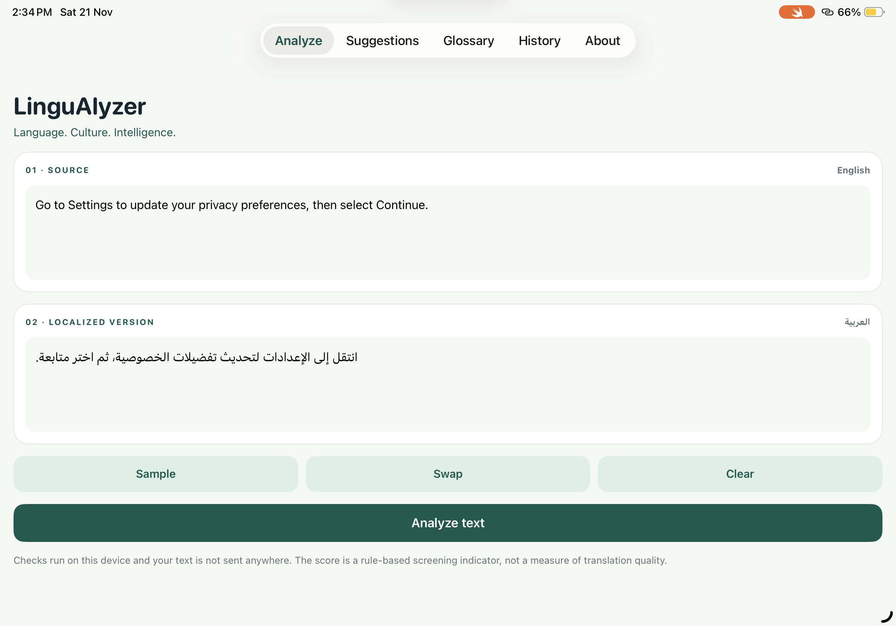

Small, mechanical errors take time away from real review
Reviewing an Arabic translation is careful work, and most of it is not about meaning. The same problems come back again and again:
- a glossary term translated differently from the approved one
- a number that doesn't match the source
- a
{name}placeholder or<b>tag that disappeared - Latin punctuation
? ,inside Arabic text - a sentence that is correct but reads like word-for-word English
Each one is easy to miss by eye and quick for software to catch. Checking them by hand takes time away from what only a person can judge: meaning, tone and cultural fit.
Many QA tools also treat Arabic as an afterthought: they compare characters exactly, so «إعدادات» and «الإعدادات» look like two different words.
A reviewer who needs a fast, honest first pass
A reviewer checking an English → Arabic translation: a localization QA specialist, an editor, or a translator checking their own work before delivery.
Short UI strings (buttons, alerts, settings, onboarding), reviewed one at a time or in batches, often on an iPad or laptop between other tasks.
A first pass that points at likely problems, explains why, and never makes the final call for them.
A score that pretends to measure quality, tools that rewrite text silently, and client text leaving the device.
Five rules that drove every decision
The tool suggests, the reviewer decides
Nothing changes without an explicit choice.
Don't overclaim
The score is a screening indicator, not a quality grade.
Explain every flag
No finding without a reason.
Arabic is first-class
Not a mirror of the English layout.
Keep text on the device
Translations are often confidential.
One tab per step of the review
Results stay on the Analyze screen instead of a separate page, so the reviewer sees the text and its problems together and can edit and re-run without navigating.
Small choices that build or break trust
A score that doesn't overclaim
A single number helps triage, but it's dangerous if it reads as "this translation is 69% good". The card is labelled Screening indicator · Rule-based QA, the number sits in a ring rather than a big headline, and a line under the input says it is not a measure of translation quality.
The score is simple and explainable: 100 minus a fixed penalty per finding (Critical 20, Review 8, Note 3), so a reviewer can always see where it came from.

Every flag has a severity and a reason
Each finding shows a severity badge, a short title, then the evidence, so the eye goes to what matters first.
Colour is never the only signal: every badge carries a word.
Suggestions need an explicit decision
Replacements are never applied automatically. Each card shows the original, the proposed replacement on mint, the reason, and Accept / Reject. Only accepted changes reach the revised text.
When a pattern can't be fixed by a simple replacement, the card says Rephrase manually instead of guessing.

Arabic as a first-class language
- Arabic fields are right-to-left and right-aligned; English fields stay left-to-right on the same screen.
- The language label is written in Arabic: العربية.
- Glossary terms match through Arabic normalization: «إعدادات» = «بالإعدادات» = «الإعدادات».
- Arabic-Indic digits ٠-٩ count as the same numbers as 0-9.
Privacy where the decision happens
All checks run on the device, including the Arabic NLP. That is stated right under the Analyze button, where the reviewer decides to paste text, not only on a settings page.

A calm, editorial system for long review sessions
Forest#0D594D · actions
Mint#DBF0E6 · secondary
Canvas#F6F8F5 · background
Ink#142630 · text
Muted#647575 · secondary text
Line#E0E8E0 · borders
Green reads as "checked" without the alarm of red, which is kept for critical findings only.
Cards group each step, and numbered eyebrows ("01 · SOURCE", "02 · LOCALIZED VERSION") make the screen read top to bottom like the workflow.
Two speech bubbles, a Latin A and an Arabic ع, with a check badge: a translation that was reviewed.
In Figma, colours are variables and buttons, tab items, the status bar and finding rows are components, so all six screens stay consistent.

Glossary
History
AboutWhat changed, and why
Real changes made while building and testing the app.
| What I saw | Why it mattered | What I changed |
|---|---|---|
| The glossary check flagged «إعدادات» as missing when the glossary said «الإعدادات». | False alarms teach reviewers to ignore the tool. | Arabic normalization (tashkeel, hamza forms, taa marbuta, the definite article, attached prepositions) before matching. |
| In Swift Playgrounds on iPad, the app closed when Analyze text was pressed. | A crash on the main action breaks trust immediately. | Changed how the result summary is rendered, and added an automated UI test that taps Sample → Analyze text on iPhone and iPad on every change. |
| In the design file, findings that mixed Arabic and English in one line read in a confusing order. | Bidirectional text is hard to scan. | Rewrote the copy to keep Arabic snippets short and quoted «…» inside English sentences. |
| In the web version, tags from translation files were counted as English letters, so correct Arabic was flagged as "non-Arabic". | Another false alarm. | Tags are ignored by the script, length and number checks, but still compared by the placeholder check. |
| Early screen images were design previews, not device screenshots. | A portfolio should show what really runs. | Added a real iPad screenshot and labelled previews clearly. |

Testing with translators comes next
Next
- Usability testing with translators Planned
3–5 reviewers each review the same 10 strings with and without the app; measure issues found and time taken, and note where wording or flags were confusing. - Arabic interface, right-to-left throughout.
- Dark mode and accessibility: VoiceOver labels for findings and the score ring, Dynamic Type.
- iPad layout: source and target side by side.
- Highlight problems in place, inside the text.
What I learned
Wording is part of the design. "Screening indicator" vs "quality score" changes how much a reviewer relies on the number.
False alarms are a UX problem. Every one makes the next real flag easier to ignore.
Designing for Arabic means designing for two directions at once: layout, alignment and mixed-language copy all need deliberate decisions.